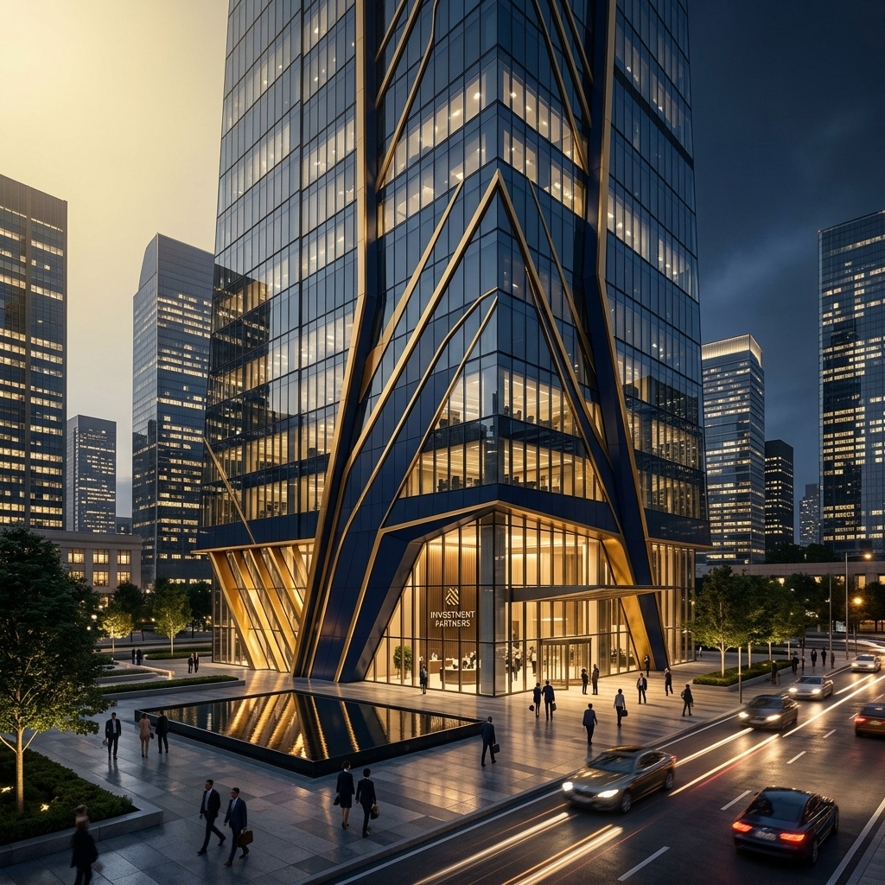
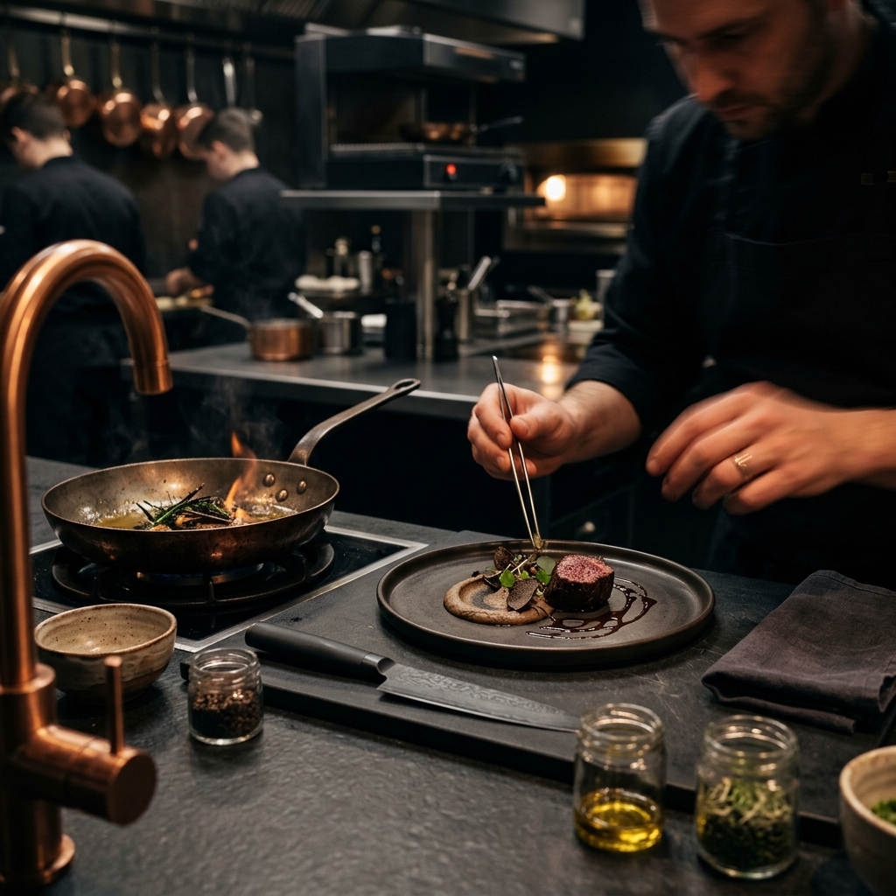

VISA KOREA
출입국 행정 자격 증명을 갖춘 전문 파트너가 복잡한 심사 요건을
철저하게 사전 검증하여 신속하고 오차 없는 비자 획득을 약속합니다.

D-8-1기업 투자 경영 (D-8)
외국인 직접 투자(FDI) 자본 유치를 완료하고 국내 지사 및 법인체의 관리자로 활약할 해외 고액 자산가/경영인 비자.
무역경영 (D-9)
국제무역사 전문성을 바탕으로, 한국에서 수출입 무역업을 영위하거나 개인 사업을 운영할 외국인 사업가 및 경영인 비자.
예술 흥행 아티스트 (E-6)
가수, 댄서, 패션 모델, 외국 무대 기예 예술가 등 주한 복합 방송 단지 및 예술 무대에서 창작 공연을 행할 연예 아티스트 비자.
화학공학기술자 (E-7-1)
정밀화학, 소재공학, 정유 가공 등 한국 핵심 제조 연구 산업 분야에 유치할 글로벌 이공계 수석 인재용 비자.

E-7 Cook전문 조리사 & 요리사 (E-7)
중식, 일식, 양식, 인도요리 등 국내 주요 외식 사업 및 관광 호텔 업장에서 활동할 특급 셰프 전용 매칭 비자.
카지노 딜러 (E-7)
주요 복합 카지노 리조트 및 국제 오락 단지에서 외화 유치 테이블 게임을 통제할 베테랑 외국인 딜러 초청 전문 비자.
항공기 정비원 (E-7-3)
국내 대형 항공 운송 정비 부서 및 방위 제조업 현장에서 활동할 초숙련 기계 정비 엔지니어링 자격증 소지자 비자.
숙련기능인력 (E-7-4)
제조업, 농축산업 분야에서 성실히 근무한 장기 체류 외국인 근로자를 위한 점수제 우수인력 전환 비자.
우수인재 거주 (F-2-7)
나이, 학력, 소득, 한국어 점수 등을 종합 평가하여 대한민국에서 자유로운 취업과 장기 거주를 허용하는 우수인력 전용 비자.
대한민국 영주권 (F-5)
체류 기한 제약 없이 영구 정착을 실현하고 최고의 경제 활동의 자유를 만끽하는 대한민국 프리미엄 평생 보장 자격.